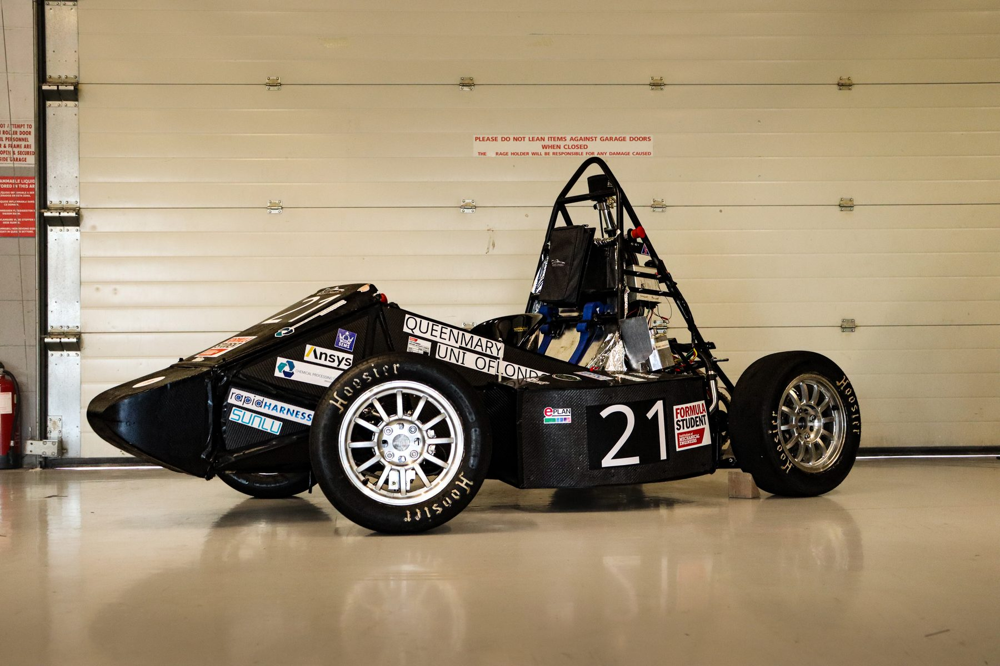
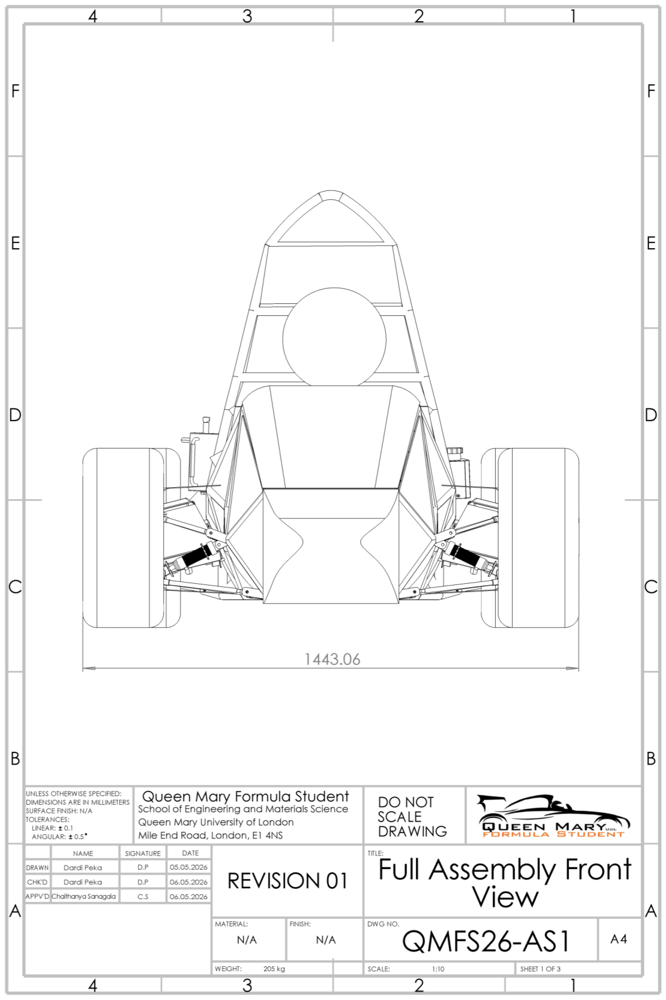
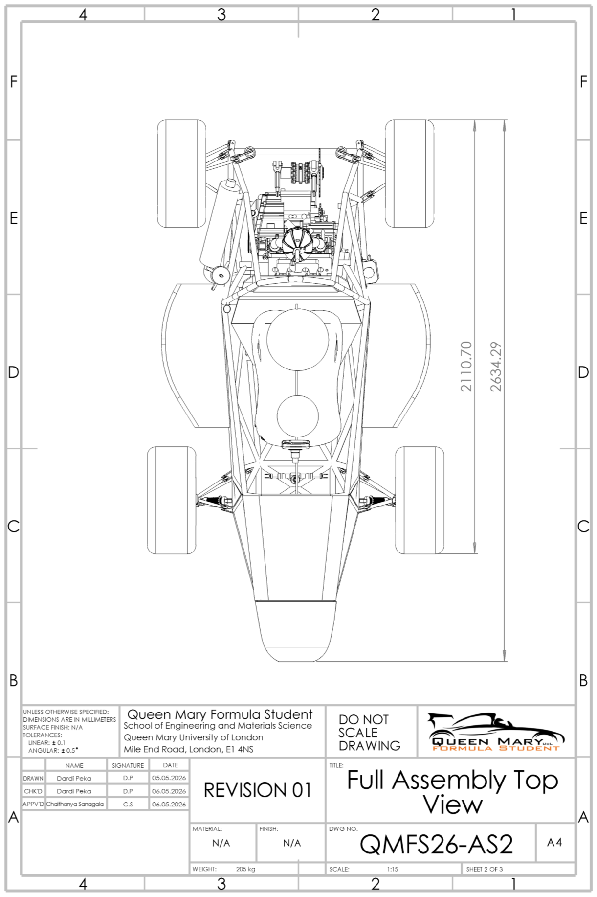
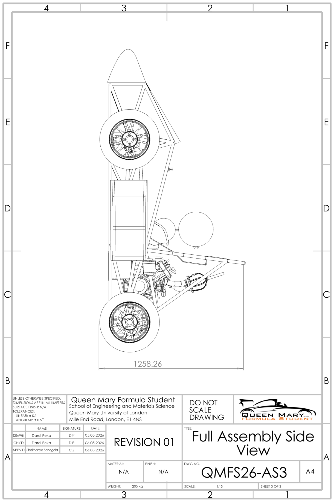
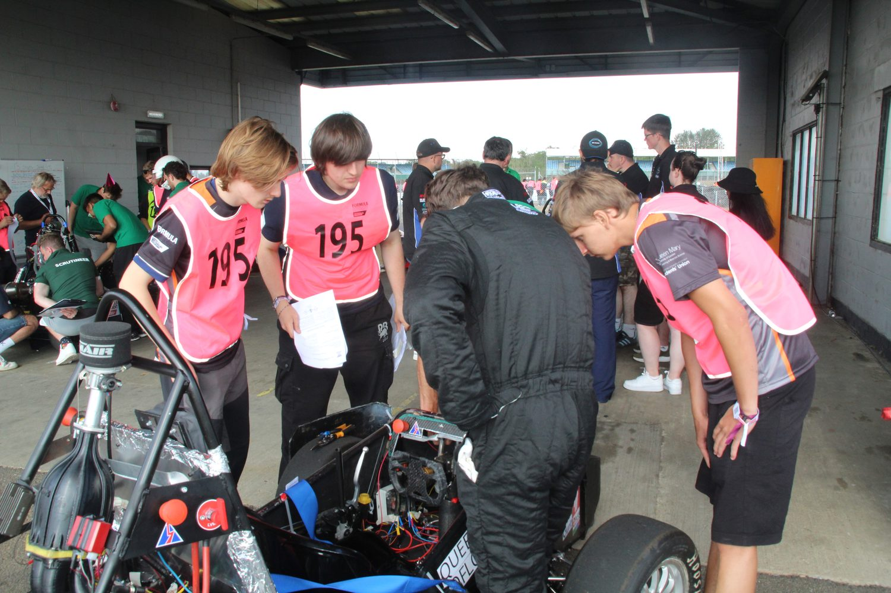

Full Vehicle Assembly – QMFS IC26
Creating and overseeing the CAD assembly, and ensuring full physical assembly of the IC26 vehicle.

Project Overview and Scope
As Head of Engineering, I maintained the CAD assembly for the IC26 car and supervised integration between departments on the actual vehicle.
The scope of the IC26 car focused on designing and building a competition entry that could go through scrutineering at FSUK26. Because of major hurdles related to procurement, manufacturing and facilities, the scope was reduced to a more achievable goal.
After the March–April period, which was plagued by a lab closure, the goal was narrowed to finishing the IC26 vehicle and sticking to the car build timeline as closely as possible. This was a decision that emphasised learning and experience rather than results, as we aimed to just enter the scrutineering bay and receive feedback for the next concept class.
The Master Assembly
I was responsible for ensuring departments integrated their assemblies, so that parts fit not only in isolation but also in the context of the full vehicle. The finished car weighed 246 kg at scrutineering, against a design mass of 205 kg, with a 2634 mm overall length, 1590 mm wheelbase, 1200 mm front track width, 1185 mm rear track width and 1258 mm height.
During my tenure as Head of Aerodynamics, I constructed the full assembly for the engineering team. My job on the model as Head of Engineering was that of an overseer: maintaining one version and resolving the interface clashes that arose between departments.
General Arrangement Drawings
The assembly drawings were created for competition submissions, drawn from the master model and submitted alongside the other engineering drawings which I was responsible for approving.



QMFS26-AS1, AS2 and AS3. Front view at 1:10, top and side at 1:15, all on A4, tolerances ±0.1 mm linear and ±0.5° angular. Sheet layout was chosen to fit the FSUK26 submission format while staying legible, which is why the side view sits rotated on its sheet.
I drew and checked the drawings myself. They were approved by the Head of Operations.
Build and Verification
The CAD model was used for the full assembly of the IC26 car. The model was updated continuously, and the car was built around it. When manufacturing and vehicle assembly became independent of the model due to time constraints, the CAD was updated to follow suit and serve as documentation.
Outcome

Despite not passing scrutineering, the season resulted in the first fully assembled QMFS car in more than two years, accompanied by the team's largest documentation handover. The next team starts from a known baseline instead of reverse-engineering last year's decisions, which is the position the team needed to be in to reset the vehicle concept.
Limitations
- No external drawing checks: I drew the assembly drawings and checked them. Integration with university workshops can allow for documentation checks by professional staff, rather than students.
- Buffer time: Given the context of previous competition years, the car build timeline should account for the most severe cases of procurement delays and facility problems occurring together, not just individually.